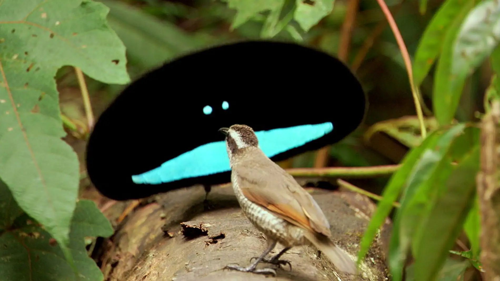
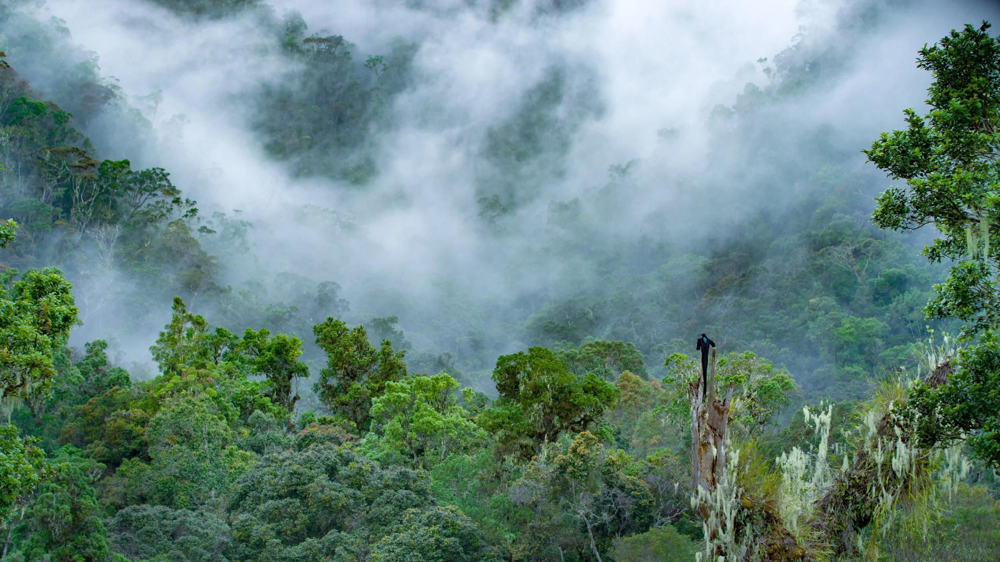
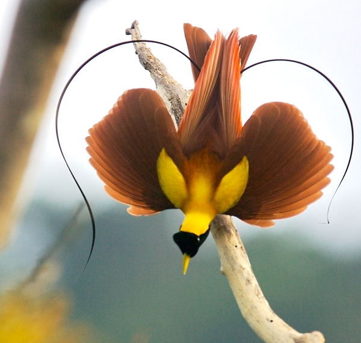

Danzas y conservación
El baile del cortejo
Para conquistar a una hembra, los machos realizan verdaderas coreografías: abren las plumas, cuelgan de ramas boca abajo, saltan y emiten sonidos. Algunas especies limpian el suelo del bosque para convertirlo en su propio escenario.
Estas exhibiciones pueden durar varios minutos y se repiten muchas veces, ya que de ellas depende que el macho sea elegido.



¿Están en peligro?
En el pasado, sus plumas se cazaban para adornar sombreros y vestimentas, y hoy su principal amenaza es la pérdida de bosques por la tala y la agricultura. Existen leyes que protegen a muchas especies, aunque su situación varía según cada una.